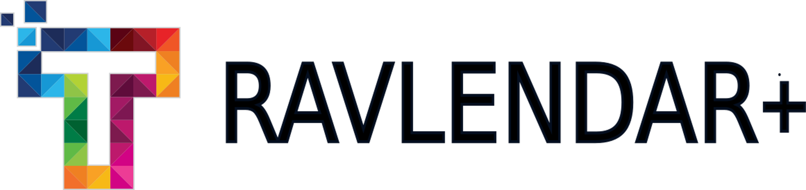
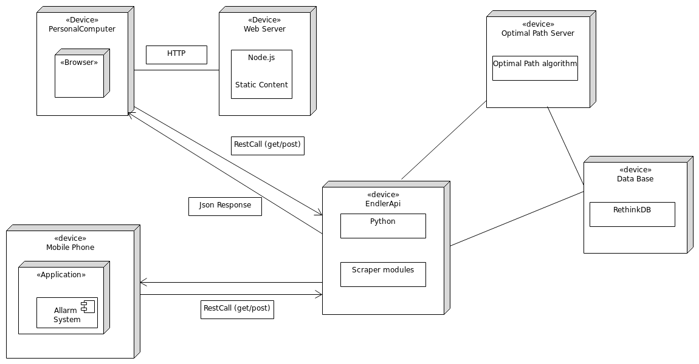
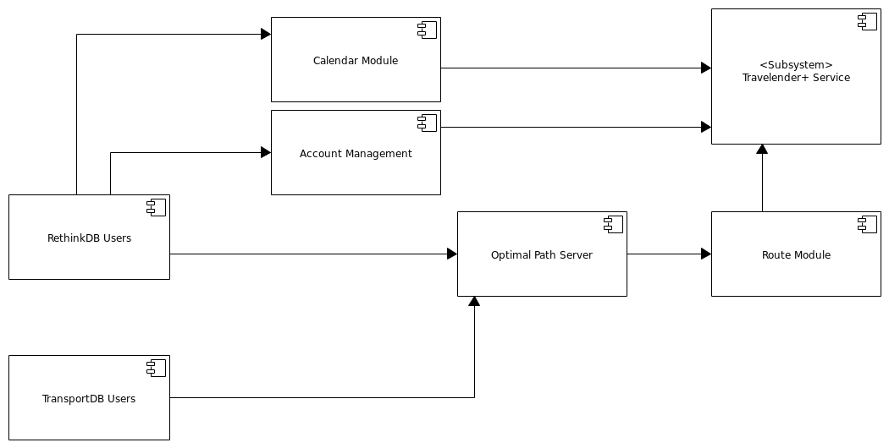

## Software Engineering Project - DD ### Presentation Marco Prosdocimi - Enrico Ruggiano - Giacomo Vercesi  --- # Architecture -- <img src="assets/architecture.png"/> -- It is mainly composed by these elements: * Applicational Servers * Firewalls * Databases * Auxiliary Server -- ## Appicational Servers **Web Server** which provides all the html forms and hypertext layout of the System. **Frontend Endpoint Server** which dispatches and elaborates all the client requests in a server side and safe environment **Optimal Path Server** which has the function of computing the Best Path Algorithm and arrange a route for the user. -- ## Firewall Protection is a quality driver essential for the System. We decide to put only two firewalls, which are: **Outer Firewall** which has the function to screen external packets with a light level of protection. A complete protection for a Web Server is not necessary. **Inner Firewall** which has to protect all the server side from malicious packets. It must guarantee an high level of protection, especially for the databases access. -- ## Databases Of course the System needs to have databases. Those are: **User Data DB** which stores all personal information and preferences of the accounts and member registred on the System. **Transport DB** which stores all the information needed to compute the Best Path Algorithm. For istance it has stored public transports timetables. This is due to absence of valid external API. (see Scraper Section for more information) -- ## Auxiliary Server - Scraper & API Module This server is needed to obtain information pertaining the various transportation methods. As a architectural choice API will be favoured over raw website scraping if possible. --- # Deployment Diagram --  --- # Design Decision -- * RESTful with transition support architecture system. * RethinkDB was chosen based on the need to store data such as geojson and other information in a structured manner, hence precluding the use of a relational database. * Both GUI will employ an MVC pattern to manage the interaction between the GUI and the backend requests --- # Run Time -- <img src="assets/AddEvent.png" style="max-width: 60%" /> --- # Implementation, Integration an Testing -- ## BackEnd * Handler Api * RethinkDB UserDB TrasportDB * Optimal Path Server -- ## FrontEnd * GUI (android and Broswer) * Client Interface * Client logic * Alarm System -- <img src="assets/IntegrationGui.png" /> --  --- # Algorithm Design -- The algorithm considers viable transport options based on the trip distance: - 0 - 0.5km (short) - foot - bike sharing -- - 0.5-10km (city) - foot - bike/bike-sharing - metro/bus - car-sharing - suburban train -- - 10-20km (ex-city) - car/taxi - metro/bus/suburban train -- - 20-100km (region) - car/taxi - train -- - 100+ km (long) - airplane - car - train -- ## Transport Switch Penalties Each mode of transport has a inherited "transfer delay", which is put to account for events such as parking the car, moving through the station and buying the transport ticket. It also allows to priviledge routes with less modes of transportation, while allowing fast multi-transport options to be displayed. -- ## Algorithm -- ``` compute_path(start_coord, end_coord){ min_bound = calc_foot_time(start_coord, end_coord); return compute_path_bound(start_coord, end_coord, min_bound); } compute_path_bound(start_coord, end_coord, time_bound){ result = []; distance = calc_distance(start_coord, end_coord); if( distance == 0 ){ return valid_null; } transports = get_transports(distance); for( single_transport : transports ){ single_path = transport.compute_path_nearest(start_coord, end_coord); if( single_path.valid && single_path.time + single_path.time_penalty < time_bound ){ remaining_time = time_bound - (single_path.time + single_path.time_penalty); begin_distance = calc_distance(start_coord, single_path.start); end_distance = calc_distance(single_path.end, end_coord); begin_bound = begin_distance / (begin_distance + end_distance); end_bound = end_distance / (begin_distance + end_distance); result_begin = compute_path_bound(start_coord, single_path.begin); result_end = compute_path_bound(single.path_end, end_coord); if( result_begin.valid && result_end.valid ){ result.add( result_begin + single_path + result_end ); } } } return result; } ``` --- # Thanks for the Attention